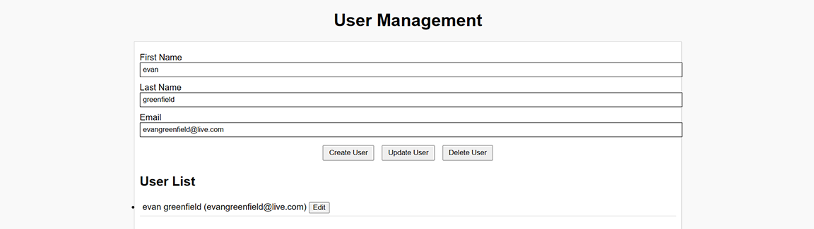
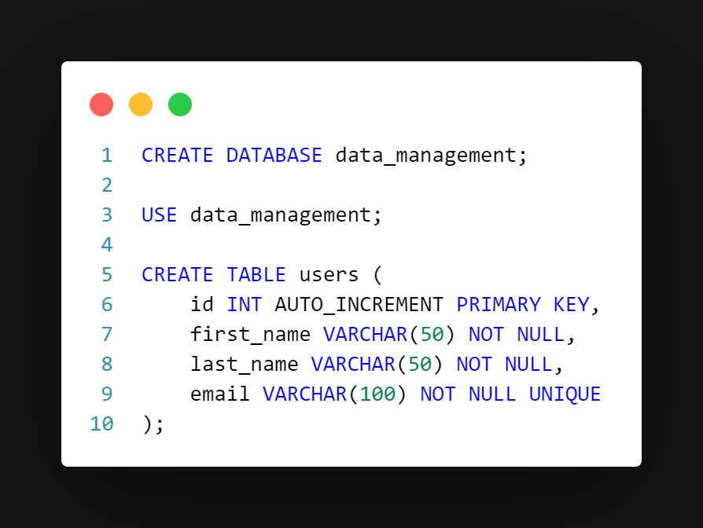
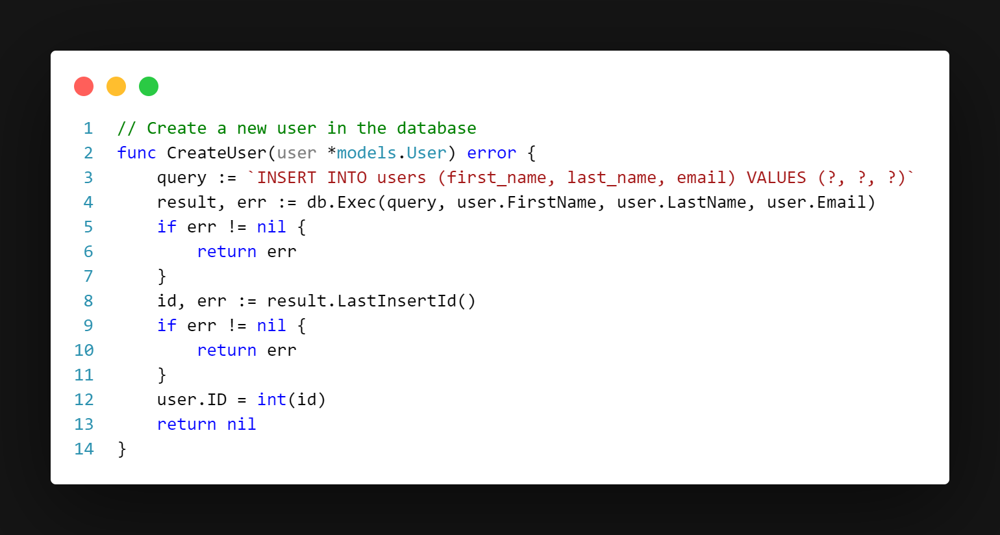
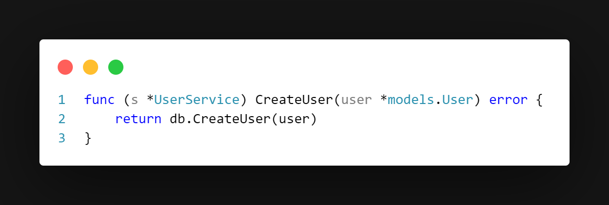
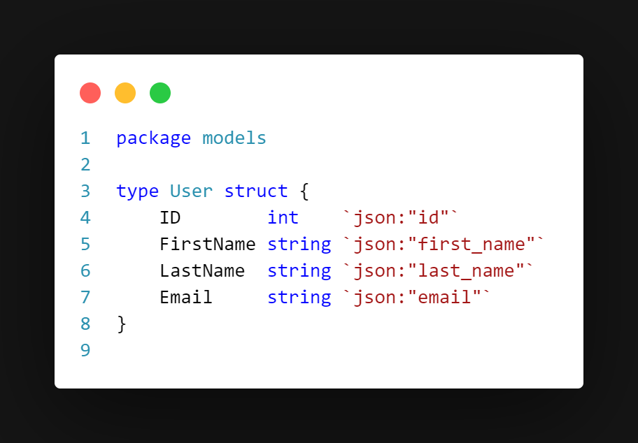
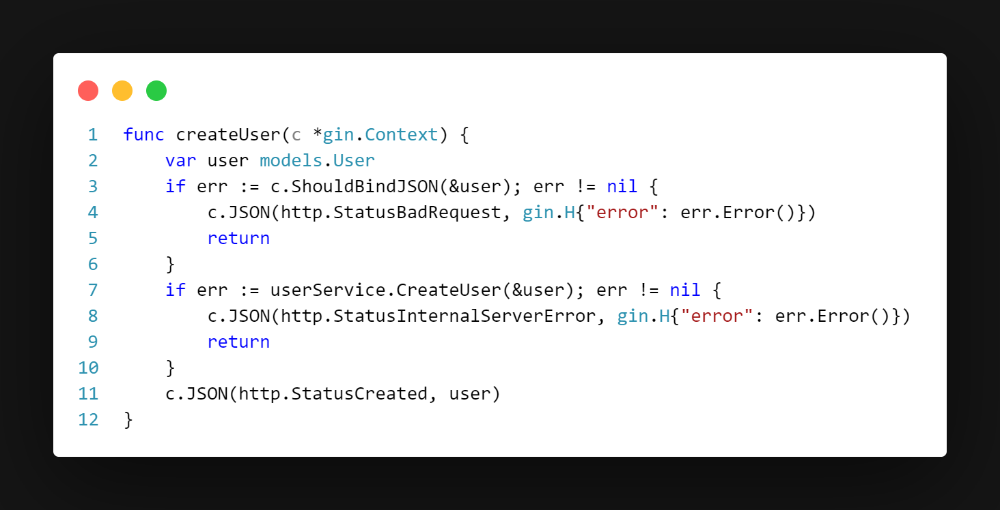
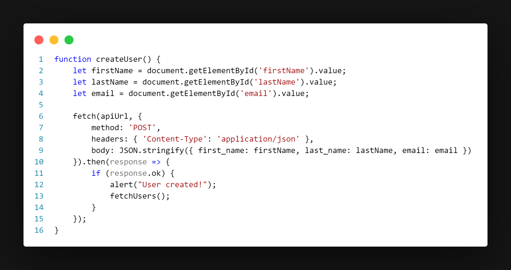

GoLang Data Management Application

Project Details
Tools
Go
MySQL
HTML/CSS/JavaScript
Github Repo
User management system made with Go and MySQL that
allows users to
perform CRUD actions on a user
database.

Implementation in code
The MySQL code. I used MySQL Workbench for this
project to make it easier to monitor table rows.
I then used Go's MySQL driver to create CRUD functions in Go.

These functions are called inside this user_service file.

The user_service file acts as
the middle-man between the db and User structure (pictured below).

User structure
These functions are called by the user_handler, which handles the HTTP
request to create a new user in the web application.

Finally, those functions are called by button press in the HTML front-end.

Javascript called when the "Create" button is clicked